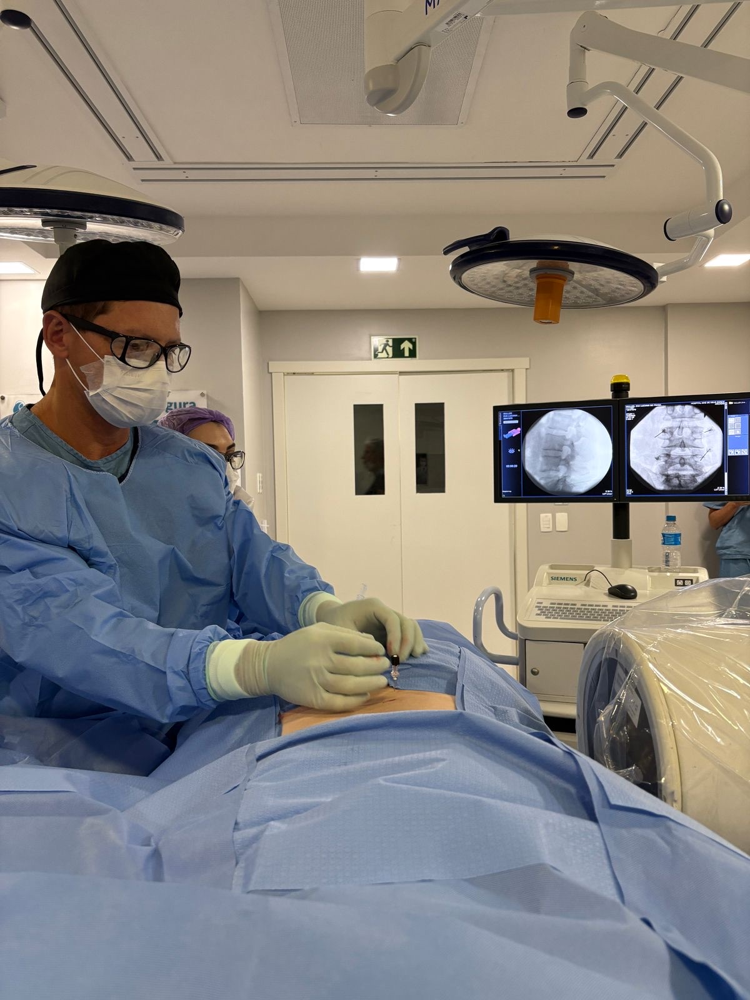
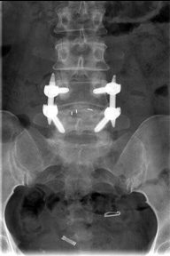

Em resumo
- O robô guia os instrumentos conforme o planejamento do cirurgião. Ele não opera sozinho.
- É usado principalmente nas cirurgias com parafusos, como a artrodese.
- A artrodese minimamente invasiva fixa vértebras instáveis por incisões pequenas.
- Na coluna cervical, a prótese de disco é uma alternativa à fixação em casos selecionados.
Como funciona a cirurgia robótica
O que é a cirurgia robótica da coluna
Na cirurgia robótica, um sistema robótico ajuda o cirurgião a posicionar os instrumentos com precisão milimétrica. Antes ou durante a cirurgia, o cirurgião planeja em exames de imagem a trajetória exata de cada implante, como os parafusos da coluna. Na hora de operar, o braço robótico mantém essa trajetória e o cirurgião executa o procedimento.
O robô não toma decisões e não opera sozinho. Ele é uma ferramenta de precisão nas mãos do cirurgião, assim como o endoscópio e a fluoroscopia.
Para quem é indicada
A principal aplicação é nas cirurgias que usam parafusos para fixar vértebras, como a artrodese em casos de instabilidade, espondilolistese e algumas deformidades. Também pode ajudar em reoperações, quando a anatomia está alterada por uma cirurgia anterior.
Nem todo caso precisa de robô. Muitas cirurgias de coluna são feitas com excelente resultado por técnicas convencionais ou endoscópicas. A escolha da técnica é feita caso a caso, na consulta.
O que muda para o paciente
- Planejamento detalhado de cada implante antes da cirurgia.
- Alta precisão na colocação dos parafusos, o que aumenta a segurança.
- Possibilidade de incisões menores, com menor agressão à musculatura.
- Recuperação mais rápida em comparação com a cirurgia aberta convencional.

Riscos
A cirurgia robótica tem os mesmos riscos de qualquer cirurgia da coluna com implantes, como infecção, sangramento, lesão de nervo e falha da fixação. A tecnologia busca reduzir alguns desses riscos, mas não os elimina. Eles são explicados na consulta, antes de qualquer decisão.
Artrodese minimamente invasiva
O que é a artrodese
Artrodese é a cirurgia que une duas ou mais vértebras para que passem a funcionar como um bloco único. Parafusos e hastes mantêm as vértebras na posição enquanto o osso cicatriza e se funde.
Na técnica minimamente invasiva, os implantes são colocados por pequenas incisões, com afastadores tubulares e auxílio de imagem, em vez de uma abertura ampla que descola a musculatura do osso.
Para quem é indicada
- Espondilolistese, o escorregamento de uma vértebra sobre a outra, com dor ou compressão de nervos.
- Instabilidade da coluna.
- Estenose do canal em que a descompressão sozinha deixaria a coluna instável.
- Alguns casos de fratura e de deformidade.
A artrodese é indicada quando o tratamento clínico não foi suficiente e quando existe um motivo mecânico claro para estabilizar a coluna.

O que muda em relação à técnica aberta
- Incisões menores.
- Menor lesão muscular e menor sangramento.
- Menos dor no pós-operatório e internação mais curta, em geral.
O objetivo final é o mesmo da cirurgia aberta: estabilizar e, quando necessário, descomprimir os nervos. Nem todos os casos podem ser feitos por via minimamente invasiva.
Recuperação
O paciente costuma levantar e caminhar logo nos primeiros dias. A fusão do osso acontece ao longo de alguns meses, período em que o retorno às atividades é gradual e acompanhado em consultas, com exames de imagem de controle.
Artroplastia cervical (prótese de disco)
O que é
Na artroplastia cervical, o cirurgião retira o disco que está comprimindo o nervo ou a medula e coloca, no lugar, uma prótese que se movimenta. A ideia é descomprimir as estruturas nervosas e manter o movimento daquele nível do pescoço.
A alternativa tradicional é a artrodese cervical, em que as duas vértebras são unidas depois da retirada do disco.
Para quem é indicada
Para casos selecionados de hérnia de disco cervical, em geral em um ou dois níveis, com dor que irradia para o braço, dormência ou perda de força, quando o tratamento clínico não resolveu. Não é indicada quando há instabilidade, artrose importante das articulações ou osso muito frágil. A escolha entre prótese e artrodese é feita caso a caso.
Como é feita
A cirurgia é feita com anestesia geral, por uma pequena incisão na frente do pescoço. O disco doente é removido, o nervo é liberado e a prótese é encaixada entre as vértebras, com conferência por imagem.
Recuperação
A internação costuma ser curta. O retorno às atividades é gradual e orientado nas consultas de acompanhamento, com radiografias de controle para verificar a posição e o movimento da prótese.